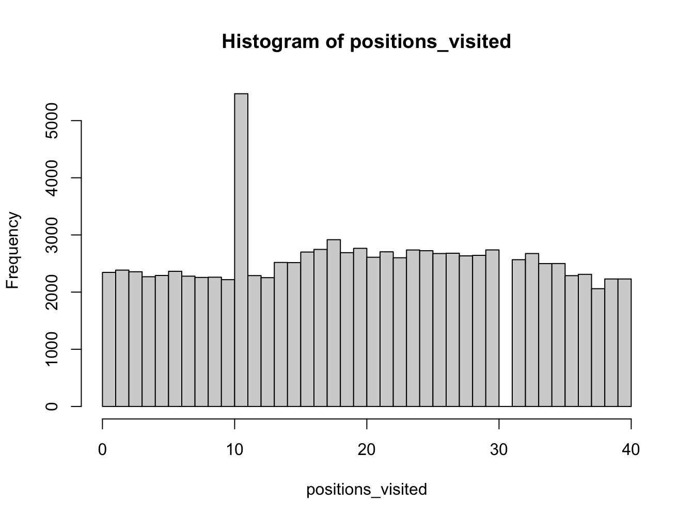
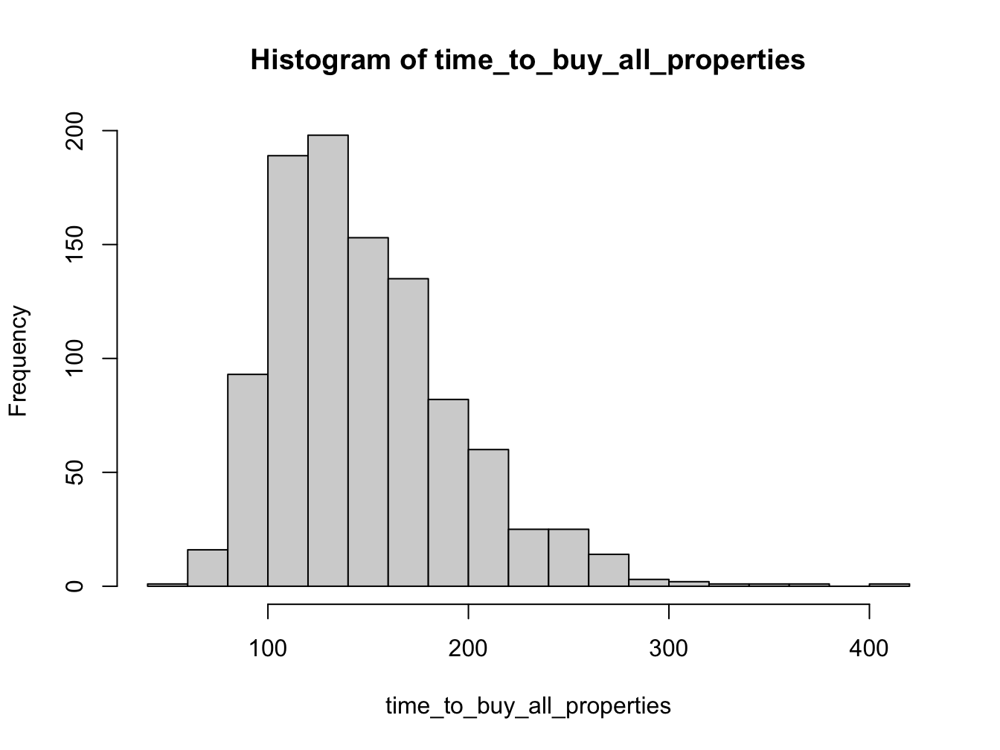

B Solutions: Monopoly
B.1 Solution Exercise 1: Rolling three doubles
You can also go to jail, if you roll three doubles (both dice having the same value) in a row. Update your code to allow for the possibility of going to Jail with three doubles. How does the distribution of board positions change?
The best process is to add the new feature to the existing code. This way we can compare the results with and without the new feature.
num_turns <- 100000 # number of turns to take
current_board_position <- 0 # start on the GO space
go_to_jail_position <- 30 # the go to jail space
jail_position <- 10 # jail space
move_size <- rep(0, num_turns)
positions_visited <- rep(0, num_turns)
# use a for loop to simulate a number of turns
for (turn in 1:num_turns) {
# set double counter to zero
double_counter <- 0
# roll (max) three times
for (j in 1:3){
# roll two dice
die_values <- sample(c(1:6), 2, replace = TRUE)
# if we have rolled a double for the third time, we proceed straight to jail
if ((die_values[1] == die_values[2]) & (double_counter == 2 )) {
current_board_position <- jail_position
break
}
# otherwise
# move player position
# number of positions to move
plus_move <- sum(die_values)
# compute new board position
new_board_position <- current_board_position + plus_move
# if land on GO TO JAIL square, then go backwards to the JAIL square
if (new_board_position == go_to_jail_position) {
new_board_position <- jail_position
}
# update board position (this corrects for the fact the board is circular)
current_board_position <- (new_board_position %% 40)
# break out of loop if we roll a non-double
if (die_values[1] != die_values[2]) {
break
} else { # increment double counter
double_counter <- double_counter + 1
}
}
# store final position visited
positions_visited[turn] <- current_board_position
}
hist(positions_visited, breaks = seq(0, 40, len = 41), right = FALSE)
Adding the rolling doubles feature doesn’t seem to change much. We might expect this since rolling three doubles is a very unlikely event!
B.2 Solution Exercise 2: Monopoly Extension
For example, the following simple extension of the previous example adds some features to record properties being purchased. This simulation is constructed based on the assumption that a players always buys any free property that land on.
num_games <- 1000 # number of games to play
num_turns <- 1000 # number of turns to take
current_board_position <- 0 # start on the GO space
go_to_jail_position <- 30 # the go to jail space
jail_position <- 10 # jail space
# vector of squares containing properties
properties_that_can_be_bought <- c(1, 3, 5, 6, 8, 9, 11, 12, 13, 14, 15, 16,
18, 19, 21, 23, 24, 25, 26, 27, 28, 29, 31, 32, 34, 35, 37, 39)
# vector to store number of turns to buy all properties
time_to_buy_all_properties <- rep(0, num_games)
# simulate multiple games
for (game in 1:num_games) {
positions_visited <- rep(0, num_turns)
positions_purchased <- rep(0, 40)
properties_bought <- rep(0, num_turns)
# use a for loop to simulate a number of turns
for (turn in 1:num_turns) {
# roll two dice
die_values <- sample(c(1:6), 2, replace = TRUE)
# move player position
# number of positions to move
plus_move <- sum(die_values)
# compute new board position
new_board_position <- current_board_position + plus_move
# if land on GO TO JAIL square, then go backwards to the JAIL square
if (new_board_position == go_to_jail_position) {
new_board_position <- jail_position
}
# update board position (this corrects for the fact the board is circular)
current_board_position <- (new_board_position %% 40)
# if we can on a square that can be purchased and which has not been
# purchased (note R uses 1-indexing for arrays)
if (positions_purchased[current_board_position+1] == 0) {
if (current_board_position %in% properties_that_can_be_bought) {
positions_purchased[current_board_position + 1] <- 1
}
}
# store position visited
positions_visited[turn] <- current_board_position
# store number of properties bought
properties_bought[turn] <- sum(positions_purchased)
# check if all properties are gone
if (properties_bought[turn] == length(properties_that_can_be_bought)) {
time_to_buy_all_properties[game] <- turn
break
}
}
}
hist(time_to_buy_all_properties, breaks = 20)